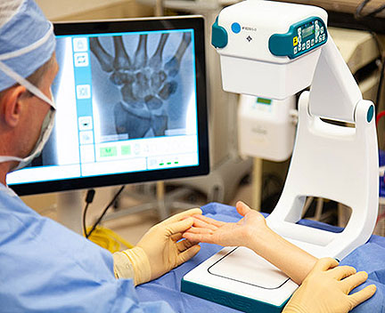
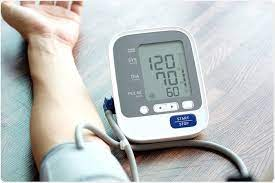
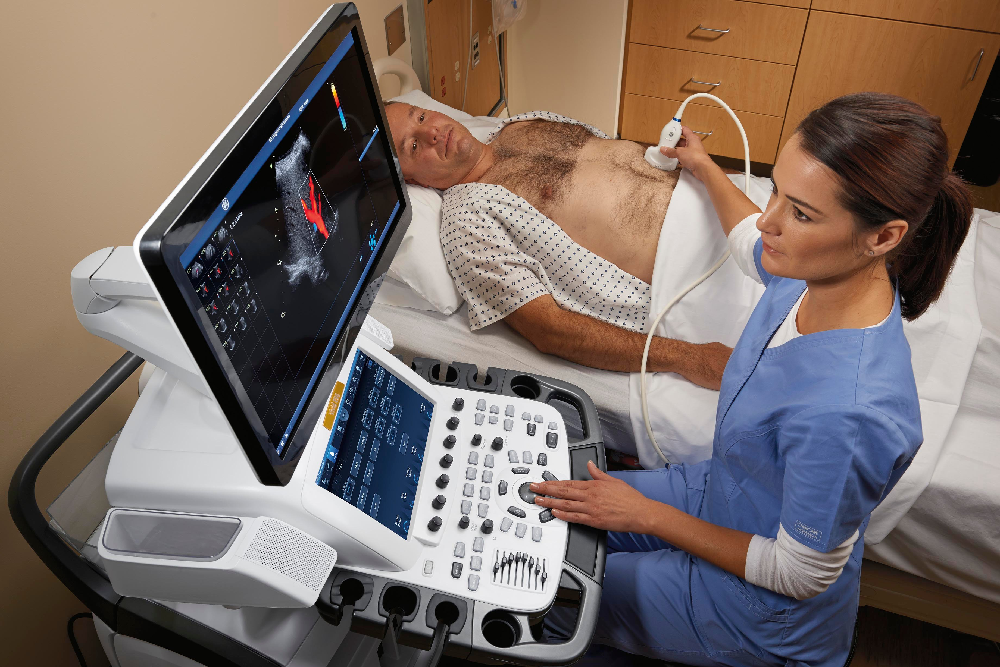

X-ray Machine

Wilhelm Roentgen, Professor of Physics in Wurzburg, Bavaria, discovered X-rays in 1895
X-rays can check much of the body. They're mostly used to check at bones and joints,
but they may also look at soft tissue,
including internal organs.
X-rays may identify bone fractures and breaks.
See more...
Sphygmomanometer

Invented by Samuel Siegfried Karl Ritter von Basch in the year 1881.
Scipione Riva-Rocci introduced a more easily used version in 1896.
a device used to measure blood pressure, composed of an inflatable cuff to collapse and
then release the artery under the cuff in a controlled manner, and a mercury or aneroid manometer
See more...
Ultra Sound

Ian Donald introduced the ultrasound in diagnostic and medicine in 1956,
when he used the one-dimensional A-mode (amplitude mode)
to measure the parietal diameter of the fetal head.An ultrasound scan uses high-frequency sound waves
to make an image of a person's internal body structures. Doctors commonly use ultrasound to study a developing fetus (unborn baby).
See more...
Magnetic resonance imaging

(MRI) is a type of scan that uses strong magnetic fields and radio waves to produce detailed images of the inside of the body.
An MRI scanner is a large tube that contains powerful magnets. You lie inside the tube during the scan.
Raymond Vahan Damadian (born March 16, 1936) is an American physician, medical practitioner,
and inventor of the first MR (Magnetic Resonance) Scanning Machine.
See more...